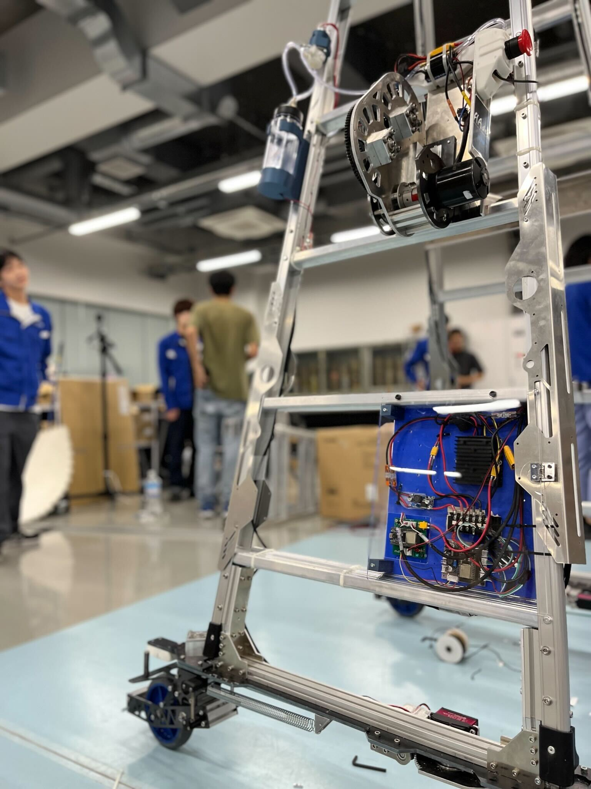
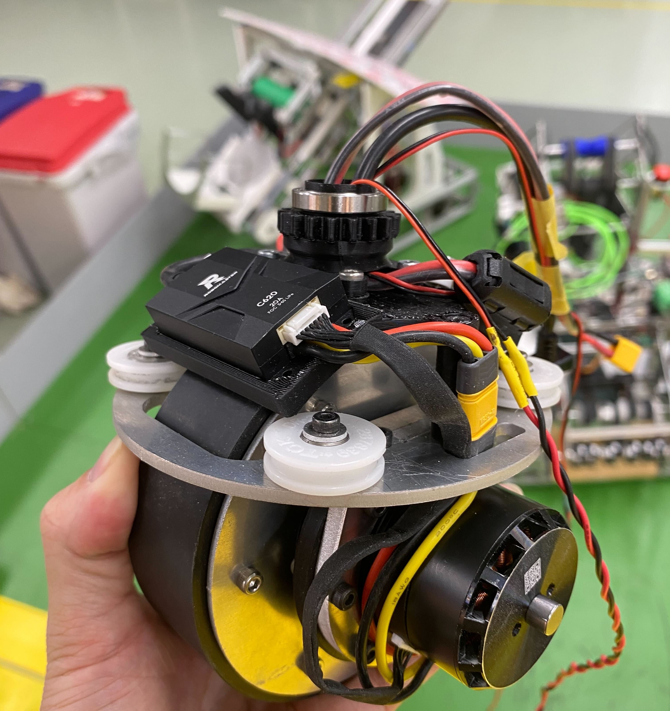
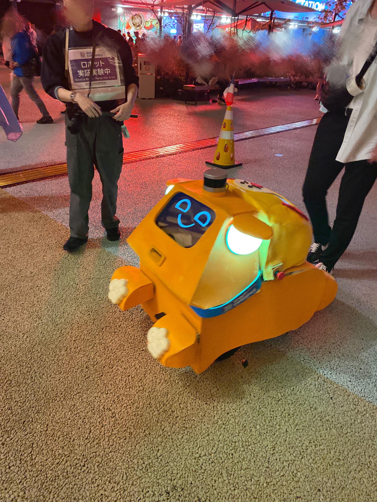
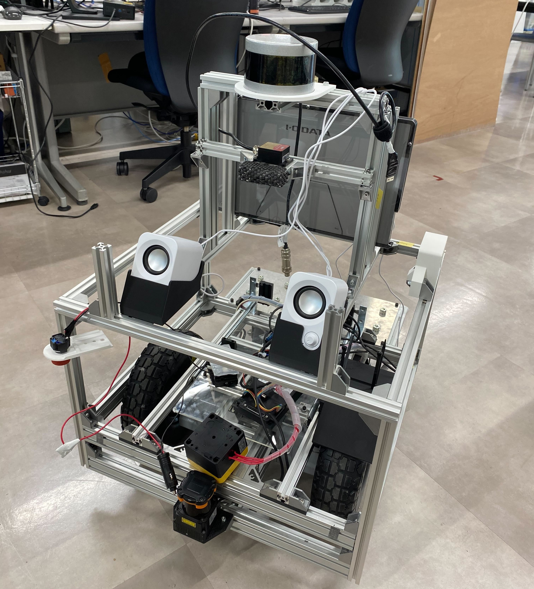

About Me
ロボコンを通したロボット開発が大好きな大学院生です．小学生からの夢であった NHK学生ロボコン に出場するため大阪工業大学に入学し， ロボットプロジェクト に参加しました．ロボットプロジェクトではロボットを設計するメカ班のリーダーを担い，2年連続の全国大会出場を果たしました．現在は他大学の学生とともに T.R.T という団体で火星ローバーを製作しており，世界最大級のローバー大会 University Rover Challengeへの出場を目指しています．
Robot competition career
- 2023 NHK学生ロボコン 全国大会出場 予選リーグ敗退・デザイン賞
- 2024 NHK学生ロボコン 全国大会出場 予選リーグ敗退 (担当:メカ班リーダー・メカ全体設計・選手)
- 2024 魔改造の夜-脚立25m走 O阪工大 (担当:メカ設計・部品加工)
- 2025 NHK学生ロボコン 全国大会出場 ベスト8・アイデア賞 (担当:コーチ・メカ設計・練習フィールド設計製作)
- 2025 キャチロボバトルコンテスト 全国ベスト8 (担当:リーダー・メカ設計・選手)
- 2026 鳥取ローバーチャレンジ エントリー部門優勝 (担当:メカ全体設計・副リーダー)
Achievement
【NHK学生ロボコン 2024】
【大会概要：全国からビデオ審査などの事前選考を通過した大学と高等専門学校の18チームが参加．競技テーマは「Harvest Day」で，ABU Robocon2024の開催地であるベトナムの稲作にちなんだ競技となっています． 各チームは2台のロボットR1(手動機)，R2(自律機)を使用して、稲植え・籾の収穫・収納といった課題達成を目指します．】


【担当領域：手動機R1と完全自律機R2のすべてのメカ設計(Fusion360使用)，および部品加工を担当．大会当日試合に出場する選手メンバーを兼任】
【開発ポイント：プロジェクトのメインメンバーである執行代は私含め5人しかおらず，下級生メンバーを含めても8人ほどしかいませんでした．その上，2024大会のルールでは大阪工業大学ロボットプロジェクト初となる完全自律機の製作が必須です． そのため，チームの目標を「全国大会出場のための最低限の機能を実装すること」と定めました．限られた人手で目標を達成するため，個人的な無駄なこだわりを捨てチームとしての成功だけを考え活動することで，2年連続となる全国大会出場を達成しました． 出場までの詳細なレポートは現在執筆中です．】
【魔改造の夜-脚立25m走】
【プロジェクト概要：魔改造の夜-脚立25m走にO阪工大として参加しました． 魔改造の夜とは，「超一流のエンジニアたちが，身の回りの家電やおもちゃをモンスターマシンに変貌させ， アイデアとテクニックを競う技術開発エンタメ番組．（公式サイトより抜粋）」 O阪工大は魔改造の夜初となる学生＋教員合同チームです．

【担当領域:放送内で一部取り上げられたシャクトリムシ型脚立の駆動部分のメカ設計，および部品加工を担当】
【開発ポイント:機構の動作は添付の動画をご覧ください．残念ながら様々な事情により，シャクトリムシ型が大会本番に採用されることはありませんでした． しかし，ロボコンよりも圧倒的に短い1.5ヶ月の納期とそれに伴うPDCAサイクルのなかで，学生や教員と意見をぶつけ合いながら開発を進めた経験はとても貴重なものでした．】
【NHK学生ロボコン2025】
【大会概要:全国からビデオ審査などの事前選考を通過した大学と高等専門学校の17チームが参加．競技テーマは「ROBOT BASKETBALL」です． 各チームはロボット2台を用いて，ダンクシュート(7点)，スリーポントシュート(3点)，ツーポイントシュート(2点)の三種類のシュートを行い，合計得点を競います】


【担当領域:2台のロボットの足まわりのメカ設計，練習用フィールドの設計製作，メカ班のコーチ(下級生へのアドバイザー)を担当
【開発のポイント:今年度大会では，ロボットプロジェクトは下図のシューティングロボット(SR)とダンクロボット(DR)を製作しました． SRの足まわりには私が開発した4輪独立ステアリング機構が搭載されています．当該機構の詳しい性能や工夫点などをブログにまとめています．ぜひご覧ください．
学ロボ2025大工大の独ステについて【大阪関西万博ロボットエクスペリエンス】
【イベント概要：2025年大阪・関西万博にて，研究室のプロジェクトとして自作の自律移動ロボット「Sirius（シリウス）」の動的展示を約4か月間にわたり実施しました．本ロボットは，会場内を自律走行しながら来場者と触れ合うことを目的としており，公共空間におけるロボットと人の共生をテーマとした実証実験を兼ねた展示です．】


【担当領域：Siriusのメカ設計，部品加工および組み立て】
【開発ポイント：万博用のロボットを新規で製作することになり，設計者を募集していたので立候補しました．これまでのロボコンで作ってきた「勝つためのロボット」とは違い，今回は「人とのふれあい」が目的でしたので，視線を合わせやすい背の高さ，人が歩くくらいのスピードで動く足回り，ふれあい用のタッチパネルやスピーカーなど，使う人のことを考えた設計にこだわりました．また，設計から組み立てのの期間が1ヶ月しか確保できなかったため，汎用的なアルミフレームを多用し加工の手間を減らす工夫をしました．そうすることで，ロボット製作が初めての研究室のメンバーにも作業を手伝ってもらいやすくなり，短い期間で協力して完成させることができました．】
【キャチロボバトルコンテスト2025】
【大会概要：「機械は人間の手を超えられるか？」をテーマに，産業機械において重要なハンドリング技術を競うロボットコンテストです．毎年ルールが変更されることが特徴で，2025年度は明治のプチアソートをハンドリングし，所定の位置に整列させることがもとめられました．全国の大学や高等専門学校などから95チームが参加し、優勝賞金50万円が用意されるなどレベルの高い大会となりました．】


【担当領域：チームリーダー，プチアソートを吸着するスカラ型ロボットアームおよびエンドエフェクタの設計】
【開発ポイント：ロボット紹介シート，チーム紹介動画をご覧いただくとロボットの詳細がお分りいただけます．今大会では「勝利」のみならず，「独創性と高い技術的ハードル」をチームコンセプトに設定しました．そのため製作難易度が高く同大会でも採用例が極めて少ないスカラ型アームを採用しました． また，プチアソートをハンドリングするエンドエフェクタには，ロマン機能を凝縮した高密度な設計を施しました． 大会期間中は予期せぬトラブルが相次ぎました．PCに接続していた電源が会場トラブルで落ちOSのイメージファイルが破損したり，操作ミスによる重要部品の破損など，一時は出場すら危ぶまれる状況に陥りました．そうした状況でもチームメンバー同士で支え合い，諦めずに解決策を探すことでなんとか試合に臨むことができました． 最終的に予選リーグを2勝で突破し，続く決勝トーナメントでも1勝を決めベスト8に入賞することができました．また，今大会では自身初となるマネジメント業務（提出書類の作成，スケジュール管理，資金集め）に挑戦しました．「自分はマネジメントに向いていない」と逃げてきた泥臭く煩雑な事務作業を自ら経験することで，「技術だけではロボットは作れない．設計に集中できる環境は，誰かの献身的な支えがあってこそ成り立つ」という大切な視座を得ることができました．】
【鳥取ローバーチャレンジ2026】
【大会概要：今、月面開発が世界中で注目を集めており，無人探査機を使った月面探査が世界各国の手で行われていて，月面開発に参加できるスキルを持った人材がより求められるようになっています． 鳥取ローバーチャレンジは鳥取砂丘においてローバーを使用した，月での探査や基地作りに必要な基礎技術を競い合う大会です．月面科学探査ミッション，自律走行ミッション，無人建設ミッションの3種目の合計得点を競います．】

【担当領域：ここに説明を書く】
【開発ポイント：ここに説明を書く】
Research
近年，電子商取引の拡大に伴う宅配便需要の増加に対し，物流業界の有効求人倍率が全産業平均の約2倍に達するなど慢性的な人手不足が社会課題となっており，有人配送に依存しない新たなモビリティ技術の創出が急務となっています．私は，構造の簡素化やエネルギー効率の向上が期待できる差動2輪方式のモビリティがこの課題解決に大きく寄与すると考えています．
現在は競技会「AI フォーミュラ」をプラットフォームとして，差動2輪車体の運動特性解析と操舵性能向上をテーマに研究を行っています．従来の車体に採用されていたキャスタ式受動輪は旋回抵抗が大きく，正確な軌道制御を阻害する要因となっていたため，私は全方位に自由に回転するオムニホイールを用いた受動輪ユニットを提案し，その設計と性能評価を行いました．
本研究の独自性は，受動輪を単なる支持機構としてではなく，エンコーダを備えた「計測輪」として機能させ，車体の姿勢変化や横滑りを定量的に推定可能にした点にあります．実機を用いた走行実験の結果，操舵性の向上を確認できた一方で，横方向の拘束力低下に伴う直進安定性の欠如という新たな課題も明らかになりました．
この挙動を解析したところ，車体の後方重心が駆動輪のグリップ力低下を誘発していることが判明したため，前方へのウェイト付加による改善を図りました．その結果，屋内直進実験において横方向の移動誤差を約71.3%低減させる成果を得ました．
今後は，計測輪から得られるデータを用いたフィードバック制御の実装を進め，目標速度である時速30km/hでの安定性評価を本田技術研究所の実験コースにて行う予定です．将来的には，この知見を自律移動ロボットに応用し，物流課題の解決に実践的に貢献したいと考えています．